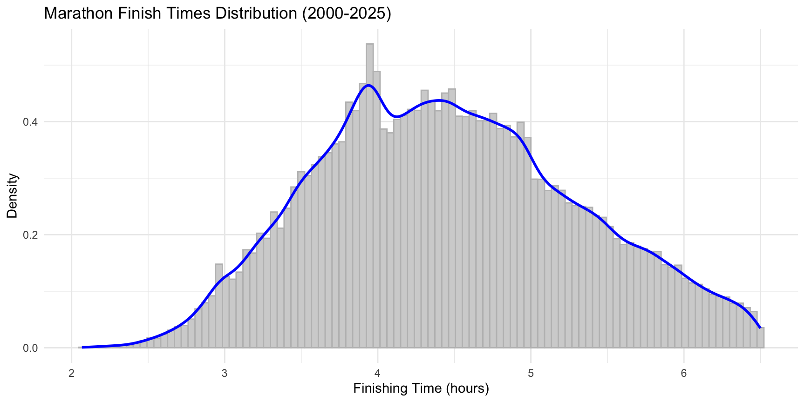
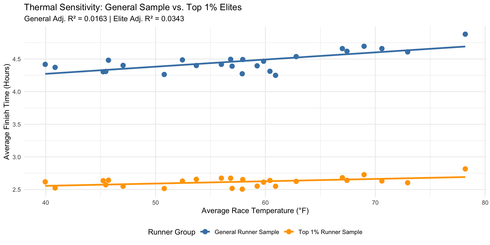

Chicago Marathon Analysis and the Impact of Weather on Performance
Miles Maloney
STAT385
2026-08-02
Motivation
Why This Topic Matters
The Chicago Marathon is one of the largest races in the world.
Over 50,000 runners show up to participate in it in recent years.
Runners spend months or years training for the Marathon.
Weather on the race day is unpredictable.
Understanding how runners are sensitive to the temperature conditions helps them set personal goals and helps marathon directors prepare for medical needs during the race.
Personal Connection
I was born and raised in Chicago and have been avid runner for many years.
Have never run the marathon but have volunteered for it many times, volunteering at a water station.
The route takes the runners right past my former high school, the entire cross country team would gather to cheer on our coach as he ran.
Research Questions
Does temperature impact the finish times of runners?
Is there a difference in performance due to weather conditions between the General Sample and Elite Runners?
Are casual runners or professional runners more sensative to weather changes?
Do humidity or precipitation impact perfomance more than temperature?
Data Description
Data Source
The Marathon results were collected from a reliable public source as a CSV file. It contained results from all runners from 2000-2025, and had over 900,000 finishers.
The hourly weather data was collected from Open-Meteo APIs, which provides high-resolution data from national weather services.
Every year, the weather data was selected from the race window between 7am and 3pm. 7am was the earliest possible starting time, and 3pm was the latest possible finishing time.
Variables
The dependent variable is finish time. It was collected in seconds, but I converted it to hours.
The independent variables are from the weather data, which are: Average Temperature (°F), Relative Humidity (%), and Total Precipitation (inches)
The categorical variables are gender, age group, runner quartile, and runner group (general sample, top 1% of finishers)
Data Size
The raw data from race results was data from over 930,000 finishers across 25 years.
I took a stratified random sample of 1000 random runners in each quartile from each year. This was to make sure that each sample had the same size and to ensure efficiency.
The top 1% of runners data from each year was collected and put in a different data set.
Data Limitations
Certain runner’s heats started at different times.
There is no data on runner’s training volume, diet, or potential personal challenges that could impact finish time.
The model uses the average of the weather from 7am to 3pm.
Methods
Data Cleaning
Filtered the data by the finishing time, so that all times were less than the Chicago Marathon time limit of 6 hours and 30 minutes (15-minute per mile pace).
Removed runners who did not finish the race.
Merged the hourly weather averages to the runner results based on year.
Exploratory Analysis
The change in marathon course details over the years was very important, so I used geographic data and sf to map out the course.
I plotted the overall distribution of the marathon finishing times
The distribution of marathon times is a broad bell shape. There are clusters before the finishing times of 3 hours, 4 hours, and 5 hours due to common goals that runners share.
Marathon Finish Time Distribution

This marathon finishing time distribution density plot is moderately right skewed.
The majority of runners finish within a time range of 4 to 5 hours.
There is 1 large present bump which indicates a common finishing time goal of under 4 hours.
Course Map Changes (2000 to 2025)
Interactive Chicago Marathon Course Map. Feel free to zoom in and select/unselect either year.
This marathon finishing time distribution density plot is moderately right skewed.
The majority of runners finish within a time range of 4 to 5 hours.
There is 1 large present bump which indicates a common finishing time goal among runners of under 4 hours.
Statistical Methods
Used the linear regression model lm to find the relationship between weather factors and finishing times.
Used the broom package to calculate the slopes and R^2 values.
Visualizations
To visualize the trendlines, used ggplot
Made interactive visuals with plotly, shiny, and leaflet so the viewer can interact with the data and change what they would like to look at and interact with.
Key Findings
Major Insights
Important Trends
General Population Slope: 39.4735 sec/°F (95% CI: 37.5734–41.3736 sec/°F)
Quartile Patterns: Runners from Q2 and Q3 had the highest R^2 values (Q2: 0.234, Q3: 0.264). The weather conditions had a greater impact on the finishing times of runners from Q2 and Q3 than Q1 and Q4.
Performance Difference: Elite runners experience a heat penalty ≈3 times less than the general population.
Supporting Graphics

Weather density distribution, finish times across temperature ranges
Race conditions can be grouped as cold, mild, hot.